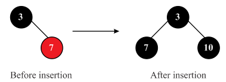

RB-Delete-Fixup is the auxiliary procedure which is called which helps to restore the red black properties by changing colors and performing necessary rotations.
There are two ways through which it can be argued that after executing RB-Delete-Fixup, the root of the tree must be black.
• The first ways is, since x = T. root, so set x. color = BLACK at the end of the procedure. This is because, the root is required to be black according to the properties of the red-black trees.
• The second ways is that in the procedure of RB-Delete-Fixup, the while loop ends because x. color = RED and x = T. root. Since, in one of the case there is no requirement to set x to be red or change x at all, so it cannot be the last case run. In another case of this procedure, nothing new is set to be RED so this cannot lead to exiting the while loop. In first case, sibling is made black and rotated such that it attains the position of the parent.
So, it is not possible to make the root red.
Red-black tree:
Property 4: If node is red, then both its children must be black.
• Consider a red-black tree T in which z and its parent are black color nodes, z.left is T.nil and z.right is a red color node.
• Now, apply RB-DELETE (T, z) on T. y becomes z and y-orginal-color is black.
• Since, z.left is T.nil in line 4, x becomes z.right, which is of red color.
• In line 5, x(z.right) is moved up to z’s original position. That is , z is removed. Now, x and its parent x.p both are red which violates red-black property 4.
• Since, y-original-color is black, in the line 22, RB-DELETE-FIXUP (T,x) is called.
• In RB-DELETE-FIXUP(T,x) , as x.color is not black , while loop is skipped and in the line 23, x.color is changed to black so that the red-black property 4 is restored.
Therefore, if in the RB-DELETE both x and x.p are red, RB-DELETE-FIXUP ( T , x ) will restore the property 4.
Example: consider the following red-black tree.
Let z= 9
Since z.left is T.nil, move x up
Call to RB-DELTETE-FIX (T, x) to fix:
Consider the following red-black tree to perform delete operation:
Required step to delete the node from red-black tree in order
Step1.
Delete the node from red-black tree.
Step2.
Delete the node 12 from red-black tree.
• After deletion of 12 from red-black tree the color of node 19 will be black and color of node 31 will be red.
Step3.
Delete the node 19 from red-black tree.
• After deletion of 19 from red-black tree the right child of 19 will become left child of 38.
• Color of node 31 will be black.
Step4.
Delete the node 31 from red-black tree.
Step5.
Delete the node 38 from red-black tree.
• After deletion of 38 from red-black tree the right child of node 38 will become the parent node and color will be black.
Step6.
Delete the node 41 from red-black tree.
• Finally all nodes will be deleted.
Examine or modify the following lines of code for sentinel T.nil in the algorithm RB-DELETE-FIXUP:
1. While
7. LEFT-ROTATE (T, x.p)
15. RIGHT-ROTATE (T,w)
20. LEFT-ROTATE (T, x.p)
Examining for T.nil:
• To balance red-black tree, rotation might be required on deletion of a node. When a left rotation is performed on node x, right child of y of x must not be T.nil because the left rotation makes y as the new root node of the subtree.
• Similarly, when the right rotation is performed on node x, the right child y must not be T.nil, because the right rotate operation makes the node y as root for the subtree.
• In the code line 9, if w is T.nil, then w.color=RED is a flaw because T.nil is black. Similarly, the same case is true in the line 14.
The following are the properties of Red Black Tree:
1. Every node must be colored red or black.
2. The root node must be black.
3. Every leaf (NULL) node must be black.
4. If a node is red, then both children of it must be black.
5. Every path from a node to a leaf must contain the same number of black nodes.
• RB-DELETE procedure deletes a node from the red black tree.
• After deleting a node, RD-DELTETE calls RB-DELETE-FIXUP to fix red-black tree violations or to restore the red black tree properties.
• The RB-DELETE-FIXUP algorithm restores the violation of properties of the RB-Tree. This algorithm executes until the node x that is the child of the deleted node is painted with black color or it becomes the root of the tree. Here denotes the parent of node x and w is the sibling of node x.
• In the RB-DELETE-FIXUP algorithm, case 1 occurs only when the node w is red. If parent of x was red, then there would be two reds in a row, namely parent of x and w, and we would have 2 reds in line before calling RB-Delete.
• Hence must be black at the start of case1 and so professors should not worry about the color of the node x.
After insertion and after deletion resulting red-black tree may or may not be same as initial red-black tree because off after insertion or deletion resulting tree may violate the property of red-black tree.
For example, insert node  into
red-black tree.
into
red-black tree.
• Before insertion the color of node 3 is black and color of node 7 is red.
• After insertion of node 10 the color of all nodes will be black according to the rule of red-black tree.

Delete the node 10 from red-black tree.
• After deletion of node 10, the property of red-black tree is violating.
• Move the node 3 as a child of node 7 and change the color of child node 3 from black to red.
Finally the structure of initial red-black tree and final red-black tree are different so final red-black tree is not same as initial red- black tree.